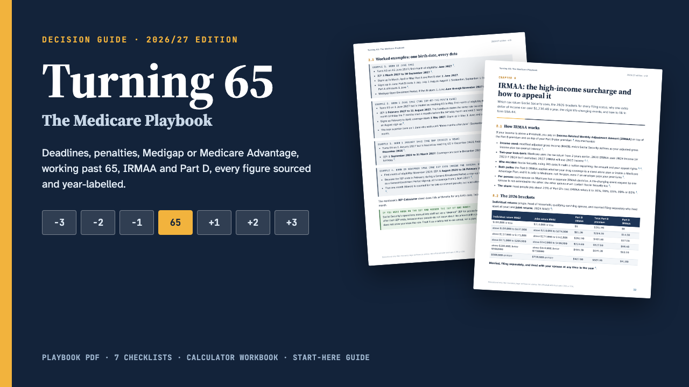

Turning 65
58-page Medicare playbook PDF, 17-page printable checklists and worksheets, a calculator workbook (IEP dates, penalties, IRMAA) and a START-HERE guide. Sources checked Nov 2026.

For Americans approaching 65, and the adult children helping them, who want to get Medicare right the first time. The official sites explain each rule on a different page and rarely do the arithmetic for you; this playbook puts the decisions in order, works out the dates and penalties with real numbers, and prints the official source next to every figure.
What you get
- The Playbook (PDF, 58 pages, 16 chapters): the 2026 and 2027 numbers at a glance, your Initial Enrollment Period worked out from a birth date (including the 1st-of-the-month rule), General and Special Enrollment Periods, late-enrollment penalties with worked calculations, Parts A to D in plain English, a decision framework for Original Medicare + Medigap versus Medicare Advantage with scenario tables, Medigap plans compared and every federal guaranteed-issue right, a 24-state table of extra Medigap rights, working past 65 (the 20-employee line, COBRA, forms CMS-40B and CMS-L564, HSA contributions), IRMAA brackets for every filing status with the SSA-44 life-changing-event form step by step, Part D and the $2,400 cap for 2027, Extra Help and Medicare Savings Programs, Medicare Plan Finder step by step, six worked scenarios, common mistakes, a guide for adult children, a glossary and official contacts.
- Checklists and worksheets (PDF, 17 pages, 7 printables): documents to gather, an enrollment timeline worksheet, a side-by-side plan comparison worksheet, Medigap shopping, leaving an employer plan, an IRMAA appeal packet, and the yearly October-December review.
- Calculator workbook (Excel .xlsx, 4 calculators): IEP calculator from a birth date, Part B penalty calculator, Part D penalty calculator (2026 and 2027), and an IRMAA lookup that shows your bracket and the income room before the next one.
- START-HERE guide (PDF, 2 pages): your dates in ten minutes and which pages to read for your situation.
Why you can rely on it
- Every figure and rule was checked on 5-6 November 2026 against Medicare.gov, CMS fact sheets, Social Security (including its operations manual, POMS), the IRS and the official "Medicare & You 2027" handbook.
- Of the 318 claims in the book's ledger, 254 are confirmed against an official source, 34 are worked examples recalculated by an independent program, and 30 rest on a compilation or a screen layout and are marked as partially verified, with how to check them yourself.
- Year labels throughout: official 2027 figures where CMS and the IRS have published them (Part D cap and deductible, penalty base premium, Extra Help copays, HSA limits); 2026 Part B premiums, deductibles and IRMAA brackets, clearly labelled, because CMS had not published the 2027 amounts on 6 November 2026. The book tells you exactly where they will appear.
- Where official sources disagree (for example a typo in Social Security's IRMAA table), the book says so.
How it works
Open START-HERE.pdf, type a birth date into the workbook, and read the pages listed for your situation: about ten minutes to know your Initial Enrollment Period and first deadline. The workbook needs no setup; blue cells are inputs.
Who it is not for
- People on Medicare because of a disability under 65, End-Stage Renal Disease or ALS: several rules differ and are not covered in detail.
- Anyone looking for a recommendation of a specific plan or insurer: this guide explains decisions and trade-offs; it does not sell or recommend plans.
- Residents of U.S. territories, where Extra Help and Medicare Savings Programs work differently.
Format and requirements
- One ZIP download with three PDF files (US Letter), one Excel .xlsx workbook (no macros), a changelog and a licence.
- Works offline. PDFs open in any PDF reader; the workbook opens in Excel, LibreOffice Calc, Apple Numbers or Google Sheets.
- This is a digital download, not a printed book.
Updates
Free updates for this edition (2026/27), including the update with the 2027 Part B premium and IRMAA brackets once CMS publishes them. The changelog lists what changed.
Independent publication. Not affiliated with or endorsed by Medicare, the Centers for Medicare & Medicaid Services (CMS) or the Social Security Administration (SSA), or any insurer. Educational only: not insurance, legal, tax or financial advice. For free one-to-one counseling, contact your State Health Insurance Assistance Program (SHIP).